Cinemática
La cinemática es la parte de la mecánica que estudia los diferentes tipos de movimiento de los objetos sin importar las causas que los producen. Cinemática significa “movimiento”.
El movimiento de un objeto representa un cambio continuo en la posición de un objeto. En física el movimiento se clasifica en tres tipos: traslacional, rotacional y vibratorio. Un automóvil que viaja en una autopista es un ejemplo de movimiento traslacional, el giro de la Tierra sobre su eje es un ejemplo de movimiento rotacional, y el movimiento de ida y vuelta de un péndulo es un ejemplo de movimiento vibratorio.
Para el estudio del movimiento traslacional se usa el modelo de partícula, es decir, se considera a un objeto en movimiento como una partícula sin importar su tamaño. En general, una partícula es un objeto parecido a un punto, es decir: un objeto que tiene masa, pero es de tamaño infinitesimal.
La posición de un cuerpo es la distancia que hay entre el punto que representa al cuerpo y el punto que representa a un punto de referencia. La posición es una cantidad vectorial, ya que requiere una dirección para quedar bien definida.
El valor de la posición dependerá del punto que tomemos como referencia, y de la dirección que tenga. En la primera de las siguientes figuras observamos al objeto A, cuya posición cambia dependiendo de qué punto (B o C) tomemos como referencia. En la segunda de las figuras vemos que, aunque tomemos como referencia el mismo punto, y que la magnitud sea la misma, su posición cambia cuando cambia su dirección
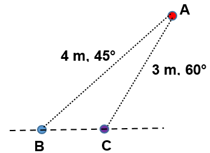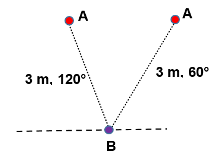
Sistema de referencia
Una forma de pensar en un sistema de referencia se presenta cuando estando en un automóvil en reposo, se percibe que éste retrocede por efecto del movimiento hacia delante de un automóvil que se encuentra al lado.
De manera general, para describir el movimiento de un cuerpo es conveniente establecer ciertos sistemas de referencia que faciliten su análisis. Es decir, el cambio de posición que experimenta un cuerpo se describe con respecto a los sistemas de referencia.
Un sistema de referencia es un sistema coordenado en tres dimensiones, de tal manera que la posición de un punto cualquiera P en cierto instante de tiempo está determinada por sus tres coordenadas cartesianas (x, y, z).
Para medir el tiempo es necesario un reloj, por ende este instrumento también forma parte de un sistema de referencia.
Al realizar el análisis del movimiento de un cuerpo consideramos que los sistemas de referencia se encuentran en reposo. Como por ejemplo, una de las señales de tránsito que indica un determinado kilometraje. Sin embargo, si el sistema de referencia fuera el Sol, tendríamos que tener en cuenta que esta señal acompaña a la Tierra en sus movimientos de rotación y de traslación.
El movimiento es el cambio continuo de la posición de un cuerpo conforme transcurre el tiempo, ya sea por cambios en su magnitud (el valor numérico), por cambios de su dirección (ángulo), o por cambios en ambos.
Cuando un objeto se mueve, ocupa diferentes posiciones sucesivas mientras transcurre el tiempo, es decir, que durante su movimiento describe una línea.
Trayectoria es la línea que describe un cuerpo durante su movimiento. En otras palabras, es el camino recorrido por el objeto desde una posición inicial hasta una posición final. Dependiendo del tipo de trayectoria que sigue un cuerpo en movimiento, podemos decir que hay dos tipos de movimiento:
Movimiento rectilíneo. La trayectoria que sigue el cuerpo en su movimiento es una línea recta.
Movimiento curvilíneo. La trayectoria que sigue el cuerpo en su movimiento es una línea curva.
El movimiento curvilíneo puede ser:
Circular, si la trayectoria es una circunferencia, como ocurre con el extremo de las manecillas del reloj.
Elíptico, si la trayectoria es una elipse, como ocurre con el movimiento planetario.
Parabólico, si la trayectoria es una parábola, como ocurre con el movimiento de los proyectiles.
Los movimientos pueden ser uniformes o variados, dependiendo de que la velocidad permanezca constante o no.
A continuación se muestran las diferentes trayectorias.
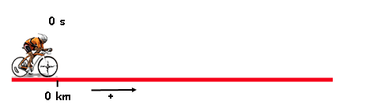
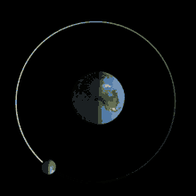
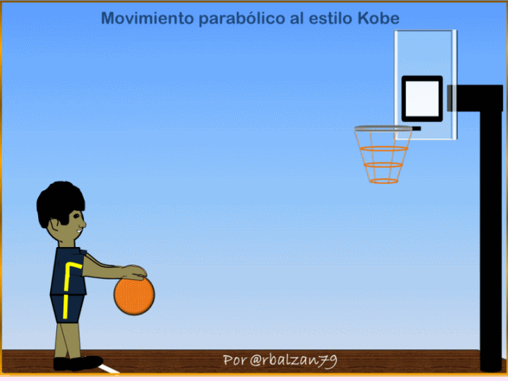
Distancia (\(\displaystyle d \))
Es la longitud de la trayectoria recorrida por el objeto.
La distancia recorrida por un móvil es una magnitud escalar, ya que sólo interesa saber cuál fue la magnitud de la longitud recorrida por el móvil durante la trayectoria seguida, sin importar en qué dirección lo hizo.
Desplazamiento (\( \vec{d} \))
En la figura se representa la trayectoria de un objeto que pasa de la posición P1 a la posición P2, describiendo un movimiento curvilíneo. Al unir las posiciones P1 y P2 mediante un segmento dirigido, representado por una flecha, este indicará el cambio neto o variación, de la posición del objeto, es decir, su desplazamiento.
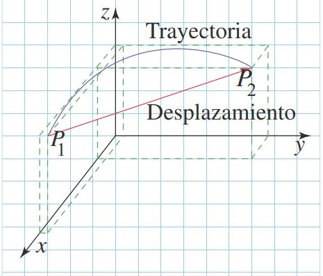
El desplazamiento de un móvil es una magnitud vectorial, ya que corresponde a una distancia medida en una dirección particular entre dos puntos: el de partida y el de llegada. Por esta razón, se representa por medio de un segmento de recta dirigido denominado vector.
Por ejemplo, para el caso del movimiento representado en la figura:
* La distancia recorrida es la medida de la línea curva descrita por el objeto en su movimiento.
* El desplazamiento es la medida del segmento dirigido que va desde la posición inicial P1 hasta la posición final P2.
La distancia recorrida y la medida del desplazamiento coinciden únicamente cuando el movimiento se produce en línea recta y en un solo sentido, por ejemplo, hacia la derecha.
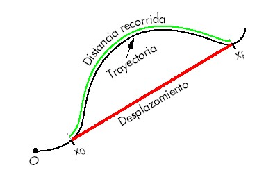
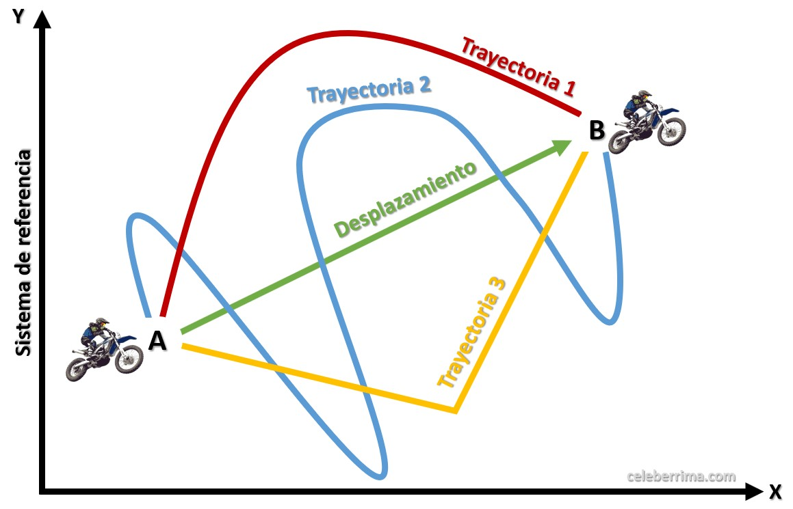
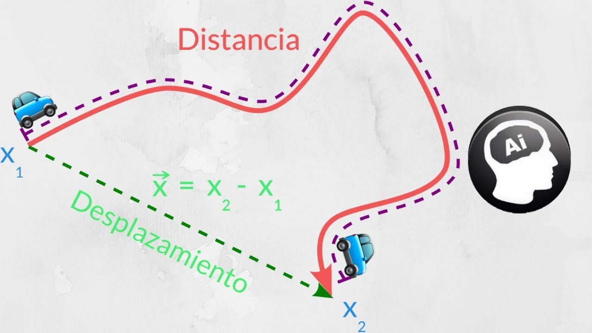
La velocidad y la rapidez por lo general se usan como sinónimos en forma equivocada; no obstante que la rapidez es una magnitud escalar que únicamente indica el valor de la velocidad; y la velocidad es una magnitud vectorial, pues para quedar bien definida requiere que se señale, además de su magnitud o valor, su dirección y su sentido.
Rapidez
La rapidez es la distancia recorrida por cada unidad de tiempo.
\(\displaystyle Rapidez=\frac{Distancia\,recorrida}{Tiempo\,transcurrido} \)
\(\displaystyle v=\frac{\triangle x}{\triangle t} \)
\(\displaystyle \triangle x={x}_{f}-{x}_{i} \)
\(\displaystyle \triangle t={t}_{f}-{t}_{i} \)
\(\displaystyle v=\frac{\left({x}_{f}-{x}_{i}\right)}{\left({t}_{f}-{t}_{i}\right)} \)
Donde:
\(v\) Rapidez (Longitud/tiempo: m/s, km/h, ft/min ...)
\({x}_{i}\) Posición inicial (Longitud: m, km, ft ...)
\({x}_{f}\) Posición final (Longitud: m, km, ft ...)
\({t}_{i}\) Tiempo inicial (Tiempo: h, min, s)
\({t}_{f}\) Tiempo final (Tiempo: h, min, s)
\(\triangle x\) Variación o intervalo de posición (Longitud: m, km, ft ...)
\(\triangle t\) Variación o intervalo de tiempo (Tiempo: h, min, s)
A continuación presentamos los datos del movimiento de 3 cuerpos y los cálculos de la rapidez para los mismos.
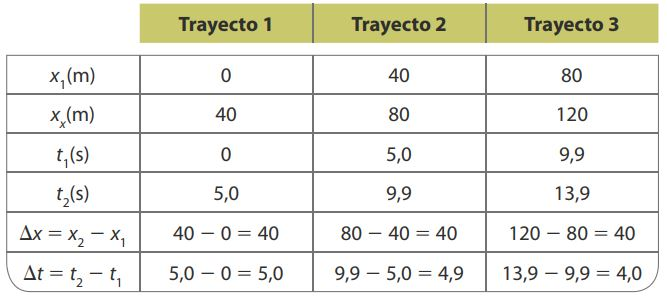
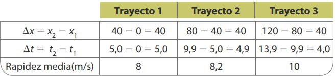
Al calcular el cociente entre la distancia recorrida por el móvil y el tiempo transcurrido, se obtiene un valor denominado rapidez media \(\left(v\right)\).
La rapidez media es el cociente entre la distancia recorrida por el móvil y el tiempo empleado en recorrerla.
Con la rapidez media nos referimos a la relación entre la distancia recorrida y el tiempo empleado en un intervalo de tiempo determinado.Sin embargo, para el movimiento de un objeto, podemos describir la rapidez con la que se mueve en un instante determinado. Por ejemplo, en la carrera de autos se ha calculado la rapidez media en tres intervalos de tiempo distintos, pero es muy probable que la rapidez de los autos haya variado instante a instante.
A la rapidez que el objeto presenta en cada instante de tiempo se le llama rapidez instantánea.
Velocidad
La velocidad de un cuerpo en movimiento es igual al desplazamiento realizado por cada unidad del tiempo, es una cantidad vectorial con signo. Se obtiene dividiendo el desplazamiento total realizado por el objeto entre el tiempo total transcurrido.
\(\displaystyle Velocidad=\frac{Desplazamiento}{Tiempo\,transcurrido} \)
\(\displaystyle \vec{v}=\frac{\triangle x}{\triangle t} \)
\(\displaystyle \vec{v}=\frac{\left({x}_{f}-{x}_{i}\right)}{\left({t}_{f}-{t}_{i}\right)} \)
\(\displaystyle \vec{d}={x}_{f}-{x}_{i} \)
\(\displaystyle \vec{v}=\frac{\vec{d}}{\left({t}_{f}-{t}_{i}\right)} \)
Donde:
\(\vec{v}\) Velocidad (Longitud/tiempo: m/s, km/h, ft/min ...)
\(\vec{d}\) Desplazamiento (Longitud: m, km, ft ...)
Cuando ves un cuerpo primero en un lugar y después en otro, sabes que se movió; pero si no lo seguiste en ese cambio de posición es difícil que puedas saber qué tan rápido lo hizo. Para describir un movimiento, no basta medir el desplazamiento del cuerpo ni trazar su trayectoria; debemos describir su velocidad.
La velocidad nos dice qué tan rápido se movió el cuerpo y hacia dónde lo hizo.
La velocidad media se define como el desplazamiento realizado por un móvil, dividido entre el tiempo que tarda en efectuarlo.
A la velocidad que el objeto presenta en cada instante de tiempo se le llama velocidad instantánea.
AceleraciónPor definición, aceleración es la variación de la velocidad de un móvil (\(\displaystyle \triangle \vec{v}\)) en cada unidad de tiempo. Es decir la velocidad de un móvil no permanece constante, sino que varía, ya sea porque aumenta o disminuye la magnitud de su velocidad o porque cambia de dirección.
La magnitud de la aceleración se puede obtener de la siguiente ecuación:
\(\displaystyle a= \frac{Variación\, de\,velocidad} {Tiempo\,transcurrido} \)
\(\displaystyle a=\frac{\triangle \vec{v}}{\triangle t} \)
\(\displaystyle a=\frac{\left(\vec{{v}_{f}}-\vec{{v}_{i}}\right)}{\left({t}_{f}-{t}_{i}\right)} \)
\(\displaystyle \triangle v=\vec{{v}_{f}}-\vec{{v}_{i}} \)
Donde:
\(a\) Aceleración (Longitud/tiempo2: m/s2, km/h2, ft/min2 ...)
\(\vec{{v}_{i}}\) Velocidad inicial (Longitud/tiempo: m/s, km/h, ft/min ...)
\(\vec{{v}_{f}}\) Velocidad final (Longitud/tiempo: m/s, km/h, ft/min ...)
En la siguiente figura se muestran los valores de la velocidad de un automóvil para diferentes instantes de tiempo. La tabla muestra cálculos del cambio de la velocidad en los intervalos de tiempo indicados y el valor de la aceleración en los mismos intervalos.
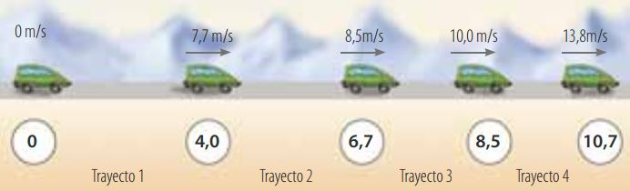
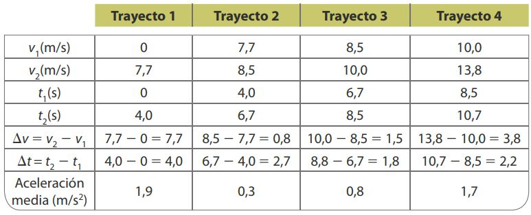
La aceleración media es el cociente entre el cambio de velocidad y el tiempo empleado en recorrerla.
A la aceleración que el objeto presenta en cada instante de tiempo se le llama aceleración instantánea.
La aceleración es una magnitud vectorial y su sentido será igual al que tenga la variación de la velocidad. Por tanto, la aceleración es positiva cuando el cambio en la velocidad también es positivo, y será negativa si el cambio en la velocidad es negativo.